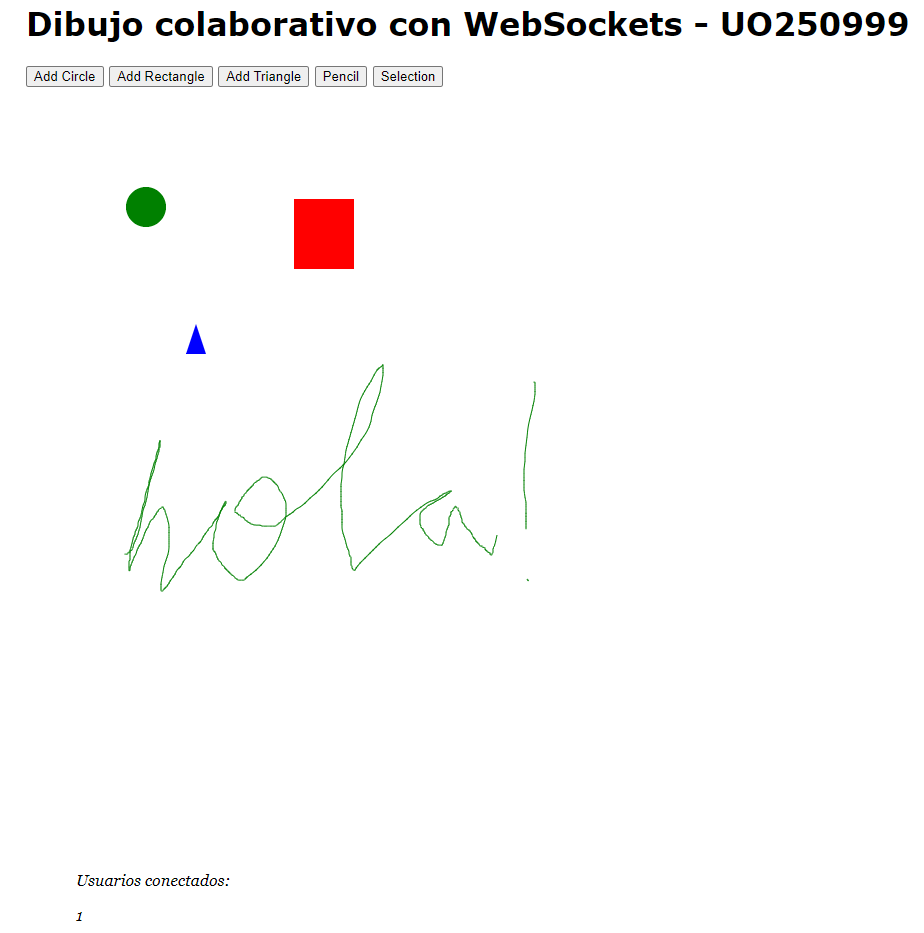

Video grupal
Jesús García Minas - 30/04/2021

Este video grupal ha sido realizado por Alejandro, Jesús y Sergio. Para ello, hemos realizado un noticiario donde se muestran las noticias...
WebSockets
Jesús García Minas - 29/04/2021

Para la asignatura de difusión de contenidos multimedia vía web se ha realizado gracias a los websockets una página web con un dibujo colab...
Blog de difusión de contenidos
Jesús García Minas - 27/04/2021

Bienvenidos a mi blog para la asignatura de Difusión de contenidos multimedia vía web. Que mejor manera que estrenar el blog explicando el propio...
Sobre mi
Mi nombre es Jesús García Minas. Soy un graduado en Ingeniería Informática del Software y actualmente estoy cursando el Master Universitario de Ingeniería Web y trabajo en Seresco como programador junior.

Redes sociales